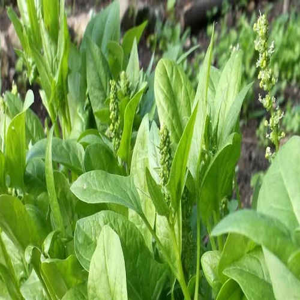
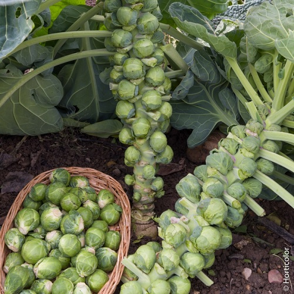
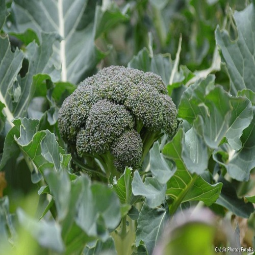
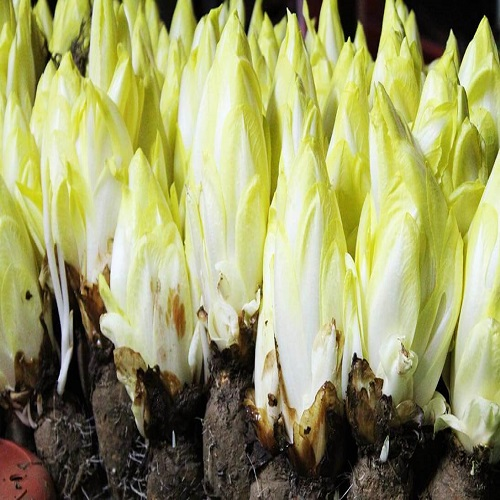
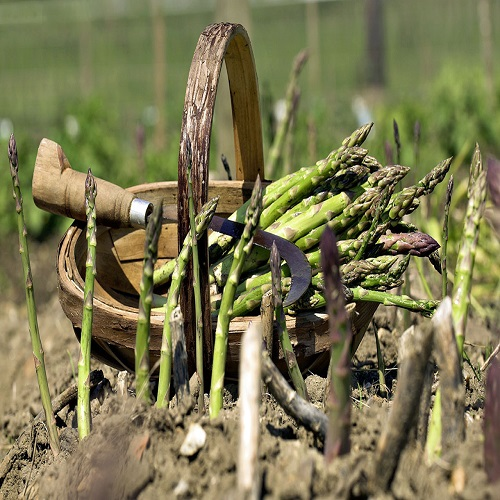
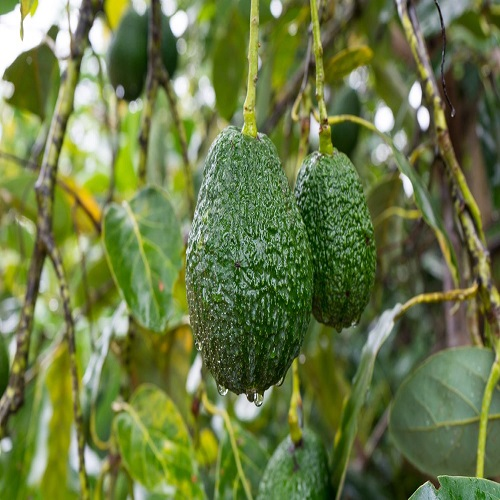
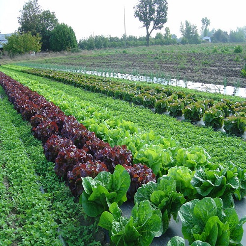
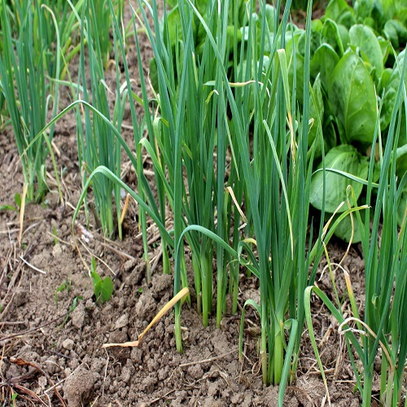
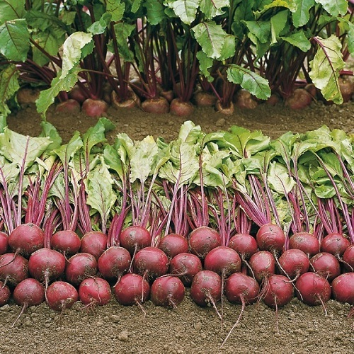

Les légumes
10 légumes à connaitre
-

Qu'est-ce que l'épinard?
Les épinards se plantent en toute saison dans votre potager. Pour sélectionner vos variétés, vous devez donc tenir compte du moment de l’année où vous les plantez et souhaitez les récolter.
Vous choisirez ainsi le Matador, le Butterfly, l’Alice ou le Splendour, si vous semez au printemps et récoltez en été. Le Géant d’hiver, le Monstrueux de Viroflay et l’Adèle seront les variétés d’épinards à planter à la fin de l’été et à récolter au printemps.
les épinards détestent les chaleurs et la sécheresse, tandis qu’ils s’acclimatent très bien aux températures fraiches, voire froides. En effet, votre plant d’épinards ne craindra pas le froid jusqu’à -5°CQuelles sont les vertus de l'épinard sur la santé ?
Bien connu pour sa bonne teneur en fer, l’épinard fournit aussi une quantité exceptionnelle d’autres vitamines et minéraux. Certains de ses antioxydants seraient d’ailleurs particulièrement bénéfiques pour les yeux. Des chercheurs ont observé que la consommation régulière d’épinards (au moins une portion de ½ tasse par semaine) était associée à un risque plus faible de cancer du sein.
Une étude prospective a également indiqué que la consommation d’épinards était reliée à un faible risque du cancer de l'œsophage. Deux études, in vitro et chez l’animal, ont démontré que, parmi plusieurs végétaux, les épinards avaient la plus forte capacité à inactiver certains enzymes associés à l’apparition du cancer de même qu’à empêcher la croissance de cellules cancéreuses. -

Qu'est-ce que le chou de Bruxelles ?
Le chou de Bruxelles est une variété de Brassica oleracea qui a la particularité de former de petites pommes sur une tige robuste terminée par une touffe de grandes feuilles. Ces "pommes" ont la grosseur d'une noix et sont en fait des bourgeons latents. Si on les laisse sur le plant ils donneront naissance à des ramifications florifères Les choux de Bruxelles apprécient un sol frais et profond, à tendance argileuse.
Évitez les sols trop riche en azote qui accélère la croissance des pommes. Évitez également les apports de fumure fraîche qui entraîne la formation de rejets au lieu de pommes. L'idéal étant un sol amendé à l'automne précédent.Semez en mars-avril pour une récolte en automne ; en avril-mai pour une récolte d’hiver et de printemps. Éclaircissez ou repiquez les plants 6/8 cm d’intervalle s’ils sont trop serrés. Enfin, installez en place au potager place à 50/60cm d’intervalle dès que les plants possèdent 6 à 7 feuilles. Arrosez bien.Quelles sont les vertus du chou de Bruxelles sur la santé ?
D’après une étude citée par Health, les choux de Bruxelles contiennent des antioxydants puissants. Les volontaires qui ont consommé environ deux tasses de ce légume chaque jour ont réduit l’oxydation de leurs cellules de 30% en moyenne. Les fibres des choux de Bruxelles aident à réguler la glycémie, favorisent la santé digestive et nourrissent les bactéries intestinales anti-inflammatoires liées à l'humeur positive et à l'immunité.Une portion de choux de Bruxelles cuits contient plus de 150 % de l'apport quotidien minimal en vitamine C.
Ce nutriment agit comme antioxydant, renforce l'immunité, la vision et l'absorption du fer, et aide la peau à fabriquer du collagène. Une portion de choux de Bruxelles cuits contient plus de 250 % de l'apport quotidien recommandé en vitamine K. En plus d'aider à coaguler le sang, ce nutriment joue un rôle essentiel dans la santé des os. -

Qu'est-ce que le brocolis ?
L’appellation « choux à fleurs » désigne des espèces cultivées non pour leurs feuilles, mais pour leur inflorescence, soit le chou-fleur (Brassica oleacera var. botrytis) et le brocoli (Brassica oleacera var. italica). Le brocoli est une fleur prête à s’épanouir, alors que le chou-fleur est un organe préfloral composé de cellules embryonnaires (méristème), qui, si on le laisse évoluer, continue sa croissance en tiges florales.
La consommation du brocoli est attestée dès l’Antiquité. Le terme broccolo (du latin brachium, branche) désigne en italien toutes les pousses tendres que produisent, à la fin de l’hiver, les différentes espèces de Brassicacées comprenant les choux, mais aussi les navets, qui se préparent à fleurir. Très appréciées, ces jeunes inflorescences on fait l’objet d’une sélection sur les plantes qui en produisaient le plus et de meilleure qualité. Le brocoli à jets, ou brocoli asperge comme il est parfois appelé, est certainement le résultat de cette sélection. Par la suite, les sélections successives ont permis d’obtenir des variétés à pomme serrée et assez hâtives pour accomplir leur cycle en une seule saison maraîchère.
Ce sont elles qui ont donné notre chou-fleur. Le brocoli est plus facile à cultiver que les autres choux. Il se plaît dans une terre profonde, fraîche et humifère et légèrement argileuse. Évitez les terres trop riches en azote qui favoriseraient le feuillage. Le brocoli a besoin d'un pH assez élevé, mais pas trop (entre 7 et 8).
Installez-le au soleil, en prenant garde toutefois aux excès de chaleur, ainsi qu'à la sécheresse. En régions chaudes, installez-le plutôt à la mi-ombre.Quelles sont les vertus du brocoli sur la santé ?
Riche en potassium et en vitamine B, le brocoli préviendrait les crampes musculaires. Selon certaines études, un des composants du brocoli préviendrait l'apparition du cancer du sein. Le brocoli permettrait de diminuer le taux du mauvais cholestérol et d'en augmenter le bon.
Riche en vitamines diverses, il aiderait au renouvellement cellulaire de la peau et lutterait efficacement contre les rides. Plein de lutéine et de zéaxanthine, le brocoli protégerait notre vue et la santé de nos yeux. Il protégerait aussi les hommes des risques du cancer de la prostate.
Le brocoli réduirait naturellement la concentration d'homocystéine dans le sang, responsable des risques d'accident vasculaire. Le brocoli permettrait aussi de renforcer notre système immunitaire, notamment grâce à sa vitamine C, et donc lutterait efficacement contre les maladies de l'hiver et le rhume. Très pauvre en calories et glucides, mais riche en fibres, c'est un véritable allié minceur pour celles et ceux qui sont au régime.
Grâce à son sulforaphane, il protégerait nos voies respiratoires et est donc particulièrement recommandé aux personnes fumeurs et asthmatiques. Excellent pour la mémoire, il ralentirait le déclin cognitif. -

Qu'est-ce que l'endive ?
La nature du sol importe peu. Cependant, comme les chicons seront obtenus au bout de racines pivotantes, pour que ces dernières se développent correctement, un sol profond, bien ameubli et non pierreux est préférable.Gare à l'excès d'azote.
La bonne période pour le semis va de la mi-avril à la fin juin. En étalant les semis, vous pourrez récolter des variétés précoces à tardives.Quelles sont les vertus des endives sur la santé ?
Les fibres solubles, présentes dans l'endive, peuvent aider à diminuer le taux de cholestérol en baissant le taux de lipoprotéines de basse densité, ou "mauvais" cholestérol. Des études ont suggéré que les fibres peuvent avoir d'autres avantages pour la santé cardiaque, comme la réduction de la tension artérielle et de l'inflammation.L'endive est une source importante de vitamine K, qui sert à retenir le calcium dans la masse osseuse. Une consommation suffisante de vitamine K peut aider à réduire l’hypercalciurie, un excès de calcium dans les urines.
Egalement riche en bêtacarotène, l’endive est bénéfique pour la vue. En effet, le bêtacarotène peut être converti en vitamine A, et cette vitamine permet de lutter contre les démangeaisons oculaires, les ulcères oculaires et la sécheresse oculaire. Plusieurs composants de l'endive, comme le potassium, la vitamine B9 et divers antioxydants sont reconnus pour leurs bienfaits neurologiques. Le potassium a été associé à une augmentation du flux sanguin vers le cerveau et à une augmentation de la cognition, de la concentration et de l'activité neuronale. -

Qu'est-ce que l'asperge?
L'aspergeraie demande un peu d'anticipation dans sa préparation (en automne, pour une plantation en fin d'hiver) mais demande peu d’entretien par la suite : juste un désherbage régulier. Qu'elles soient vertes, blanches ou violettes, l'asperge se cultive quasiment de la même manière. L'asperge, Asparagus officinalis, est une plante vivace de la famille des Asparagacées. Elle est cultivée au potager pour ses jeunes pousses tendres et délicieuses : les turions. Ces dernières se développent à partir d'une souche souterraine : la griffe. Les asperges ne sont récoltées qu'à partir de la 3e-4e année suivant leur plantation.
La récolte s'effectue sur deux mois, et peut atteindre 500 à 600g par pied. A l’état sauvage, elle atteint 1,50m de haut. Elle forme un buisson touffu au feuillage plumeux, et se couvre de minuscules fleurs jaunâtres de mai à août auxquelles succéderont des baies rouges, uniquement sur les pieds femelles.Quelles sont les vertus de l'asperge la santé ?
Outre le potassium, cet aliment qui est composé à plus de 90% d’eau, contient un acide aminé, appelé asparagine, qui permet d’éliminer les toxines et le surplus de sel présents dans l’organisme. L’asperge est donc un diurétique naturel qui nettoie les reins et prévient les calculs urinaires. En été, on adore en manger en salade avec une vinaigrette légère, grillées avec du parmesan ou dans une tarte. Un plaisir décuplé surtout quand on apprend que l’asperge est très peu calorique (environ 20 calories pour 100 g). Un formidable partenaire minceur avant d’enfiler le maillot de bain.
L’asperge renferme un taux important de vitamine B9, connue sous le nom d’acide folique, qui est fortement recommandée chez les femmes enceintes. En effet, cette vitamine aide au bon développement du fœtus pendant les premiers mois de la grossesse. La consommation régulière d’asperges apporte une grande quantité de fibres, lesquelles améliorent le transit intestinal. Ne pas hésiter à les consommer sous forme de jus pour un effet laxatif. Ainsi, les ballonnements et les problèmes de constipation ne seront plus qu’un lointain souvenir. Ces mêmes fibres ont aussi un pouvoir rassasiant ce qui évite le grignotage.
Riche en antioxydants avec de la vitamine A, C et E, l’asperge est un puissant anti-âge et prévient certains cancers et maladies cardiovasculaires. Elle serait également conseillée lorsque l’on souffre de problèmes de mémoire ou de concentration. -

Qu'est-ce que l'avocat ?
La culture de l’avocat n’est possible en extérieur que si vous vivez dans un climat à hiver doux. L’avocatier étant originaire du Mexique, il déteste le gel et s’adapte au froid assez difficilement. Sinon il faudra mener la culture de l’avocat en intérieur pendant l’hiver et disposer donc d’une véranda ou d’un jardin d’hiver pour le rentrer .
Fructification de l’avocatier : L’avocatier à besoin d’être pollinisé pour fructifier. Chez l’avocatier, chaque fleur s’ouvre deux fois : une première fois en tant que femelle et une deuxième fois en tant que mâle. Il est donc capable de le faire seul, mais il est préférable d’avoir plusieurs plants pour assurer une bonne pollinisation. L’hygrométrie doit être élevée à la nouaison ( phase initiale de la formation du fruit ), 70 à 80% et plus modérée lors du grossissement des fruits. L’avocat est un fruit climactérique (comme les bananes). C’est à dire qu’il grossit sur l’arbre où il peut rester plusieurs mois, mais il ne mûrit qu’une fois cueilli.
Ainsi, un avocat dur est un signe de fraîcheur.Développement de l’avocatier : l’avocatier peut atteindre entre 8 et 20 mètres de haut en extérieur et vivre jusqu’à 70 ans. La production commence 4 ans minimum après la plantation mais peut être beaucoup plus tardive. L’avocatier nécessite un ensoleillement important. Bien que s’accommodant d’une large gamme de sols dans la mesure où ils sont bien drainés, l’avocatier préfère (au jardin) des sols sableux ou sablo-argileux.Quelles sont les vertus de l'avocat ?
. Si votre digestion est parfois un peu compliquée, mangez de l'avocat. Un avocat contient en effet en moyenne 7% de fibres, ce qui facilite le transit intestinal. Outre ses vertus digestives, l'avocat a une autre qualité : les acides gras qu'il contient donnent rapidement au cerveau de celui qui le mange le signal de la satiété. L'avocat agit sur le taux de cholestérol de deux manières distinctes. D'abord, il contient des phytostérols qui réduisent le LDL, appelé mauvais cholestérol. Ensuite, il contient aussi de l'acide oléique qui augmente le bon cholestérol, HDL.
L'avocat est gras, c'est évident. Sauf que les graisses qu'il contient sont des acides gras insaturés, qui sont excellents pour le système cardio-vasculaire. L'avocat contient de nombreuses vitamines, dont les vitamines C et E, et d'autres vitamines dont on manque souvent dans notre alimentation. L'avocat contient également du magnésium et du potassium, en plus des autres vitamines. Excellent pour les femmes enceintes qui souffrent de carences vitaminiques. -

Qu'est-ce que la salade ?
Les salades sont des plantes annuelles avec un système racinaire profond, peu ramifié. Installez la à mi-ombre, dans un sol frais et humifère. La photopériode et les variations de températures entre le jour et la nuit ont un rôle très important dans la formation du cœur de la salade et dans sa floraison. Un excès de chaleur produit une montée en fleurs de la salade et un goût amer du feuillage. D'où l'importance des variétés résistantes à la montée en fleurs.Semez en terrine puis repiquez en pleine terre un mois et demi après. Ou semez directement en place, à la volée avec une densité de 1 g /m². Comptez 10 à 15 plants/m². La distance de plantation est de 30 cm/rangs et 30 cm entre rangs.
Selon la période de récolte, les périodes de semis diffèrent. Ainsi les laitues de printemps se sèment en février et mars sous abri (tunnel ou châssis froid). Les laitues d'été de fin mars à juin en pleine terre. Les laitues d'hiver en août-septembre (protection à prévoir). Les laitues romaines de mars à juin. Et semez les laitues à couper de mars à fin août, en place.Quelles sont les vertus de la salade ?
Pour commencer, les salades sont très peu caloriques. Cela permet donc de perdre du poids, ou simplement de faire attention à sa ligne. Les salades contiennent une quantité de fibres différentes, dont 15 % à 35 % se trouve sous forme soluble. La laitue romaine est la plus riche, suivie des laitues frisées, iceberg et Boston. Les fibres solubles sont connues pour leur effet bénéfique sur les lipides sanguins. L’endive, la laitue, la roquette, la scarole, la batavia, les feuilles de chêne regorgent de béta-carotène. Cependant, c’est le pissenlit qui en contient le plus.
La laitue contient principalement le bêta-carotène et la lutéine, mais aussi différents types de xanthines (par exemple la zéaxanthine) selon la variété. Ces composés posséderaient des propriétés antioxydantes et la consommation d’aliments riches en caroténoïdes serait reliée à un risque moindre de développer certains cancers. La plupart des salades sont d’excellentes sources vitamine B9 (acide folique). Cette vitamine joue un rôle clé dans le renouvellement des cellules de votre organisme ce qui est particulièrement important aux futures mamans. La frisée, Boston, la mâche, le cresson et le pissenlit sont les salades qui sont les plus riches en vitamine B9.
Les feuilles vertes des salades sont les plus riches en vitamine C et calcium. Par exemple, pour 100g de roquette on a 160 mg de calcium et 15 mg de vitamine C. Cela couvre environ 40% de vos besoins quotidiens en vitamine C. Similaire à la romaine, la roquette contient plus de calcium. En effet, pour 100 g de romaine, on a 24 mg de vitamine C et 33 mg de calcium. La laitue, par exemple, contient différents composés phénoliques, principalement la quercétine, ainsi que des acides phénoliques (l’acide caféique et l’acide coumarique). Ces substances antioxydantes protègent les cellules du corps des dommages causés par les radicaux libres. -

Qu'est-ce que le poireau ?
Le poireau fait partie de la même famille que l’oignon et l’ail. C'est un légume résistant que l'on retrouve toute l'année sur les étals des marchés. Sa saveur subtile et délicate agrémente à merveille les soupes et les salades. Il est actuellement le neuvième légume le plus consommé en France
Quelles sont les vertus du poireau ?
Un des principaux atouts du poireau, c’est sa richesse en fibres ! Avec 2,3 grammes de fibres par 100 grammes. Un atout indéniable, particulièrement utile pour relancer un transit ralenti. Les fibres du poireau sont surtout logées dans le vert du poireau (c’est-à-dire dans les feuilles).
Le poireau, comme la majorité des légumes, est très pauvre en calories. En effet, avec 32,6 kcal par portion de 100 grammes, il ne fait pas exception à la règle. Mais son apport calorique n’est pas le seul critère qui le rende intéressant pour la gestion du poids. Sa richesse en fibres en fait un aliment léger mais rassasiant. Or, une meilleure satiété est un critère important d’un rééquilibrage alimentaire réussi. -

Qu'est-ce que la betterave ?
La betterave appréciant les sols plutôt riches, il est opportun d’amender la terre avant avec un fertilisant du type fumier et algues à mélanger avec la terre. Cette étape est la garantie d’avoir de belles et délicieuses betteraves lors de la récolte. Si vous souhaitez semer la betterave, préférez le semis en avril, mai ou juin directement en place au potager.
La levée de la betterave est rapide puisqu’elle intervient seulement 10-12 jours après le semis des graines.Assurez-vous qu’il n’y aura plus de gel ou protégez-les, le cas échéant, par un tunnel en plastique.Quelles sont les vertus de le betterave ?
Très peu calorique (30 à 40Kcal/100g), gorgée de fibres, vitamines et minéraux, la betterave se distingue surtout par sa richesse en antioxydants et notamment en bétalaïnes, ces pigments anti-inflammatoires qui lui donnent sa couleur flamboyante et qu’elle est un des rares végétaux à abriter. Elle affiche aussi une teneur élevée en nitrates (dégradés en nitrites une fois ingérés), des composés naturels qui préservent l’élasticité des artères. Ces qualités exceptionnelles lui confèrent un pouvoir médical considérable.
Pour la santé cardiovasculaire: Des études ont montré que la betterave était efficace pour lutter contre l’hypertension artérielle qu’elle peut abaisser de plus d’un point. En améliorant aussi la circulation sanguine, en favorisant le bon cholestérol au détriment du mauvais et en luttant contre le stress oxydatif, elle permet ainsi de préserver la santé cardiovasculaire. Pour la santé oculaire: La richesse en antioxydants de la betterave, notamment les caroténoïdes contenus dans ses feuilles permet de protéger de la DMLA, de la rétinite pigmentaire et retarde l’apparition de la cataracte.
Pour prévenir le cancer: Les bétalaïnes de la betterave ont le pouvoir d’inhiber la production et multiplication des cellules cancéreuses tout en augmentant la réponse immunitaire. Une double action, démontrée par plusieurs études menées en laboratoire